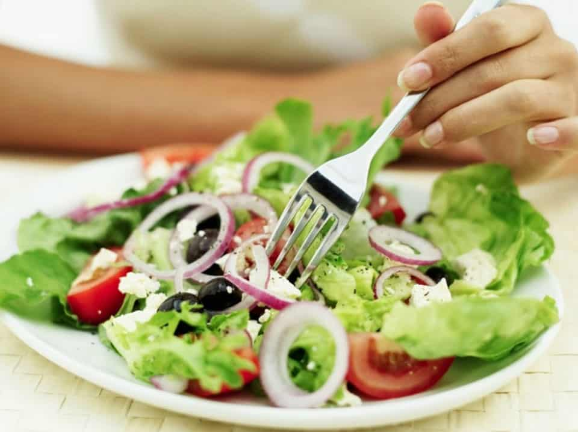
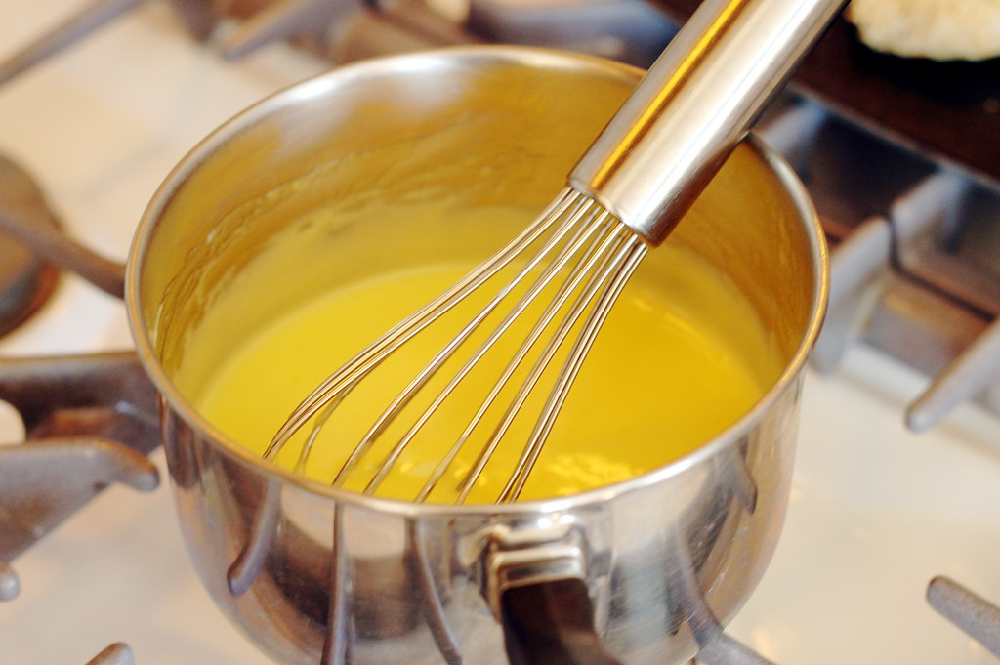

Kim's Kitchen
Cooking Class
홈
소개
교실
케이터링
연락처

Oriental Salad
채식주의자
런던에서의 5주 코스
5주간 채식주의자 음식에 대해 소개
하고 쌀과 국수 요리를 가르친다.

Teriyaki
소스 마스터클래스
1일 워크샵
1일 집중 코스에서는 다양한 요리
에서 사용할 수 있는 가장 맛있는 소스
를 만드는 방법을 살펴본다.